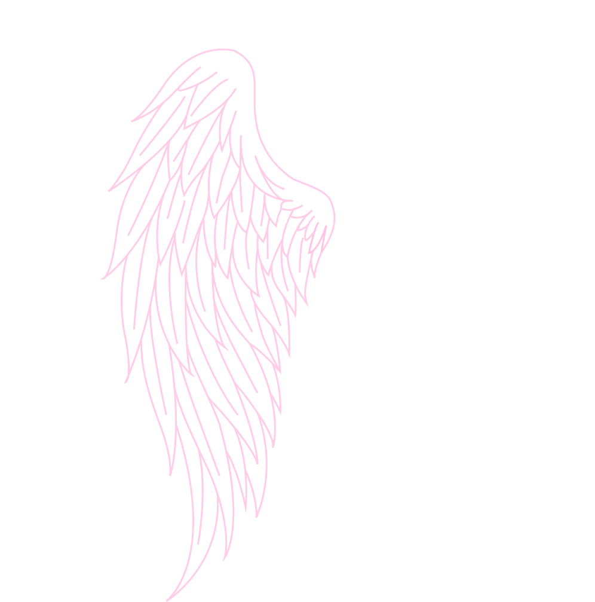
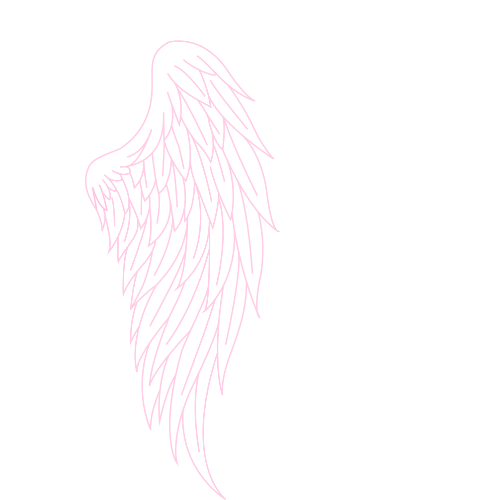

Google Fonts
A curated selection of typographic styles, demonstrating variable characteristics and visual contrast.


Ballet
An elegant, variable script font designed by Maximiliano Sproviero. It offers extreme contrast and graceful curves.
Urbanist
A low-contrast, geometric sans-serif inspired by Modernist typography. Pure forms and balanced spacing.
Cormorant
A classic serif typeface inspired by the 16th-century legacy of Claude Garamont. Elegant curves and sharp counters.
Space Mono
An original fixed-width type family tailored for editorial use. Combines geometric structure with tech details.